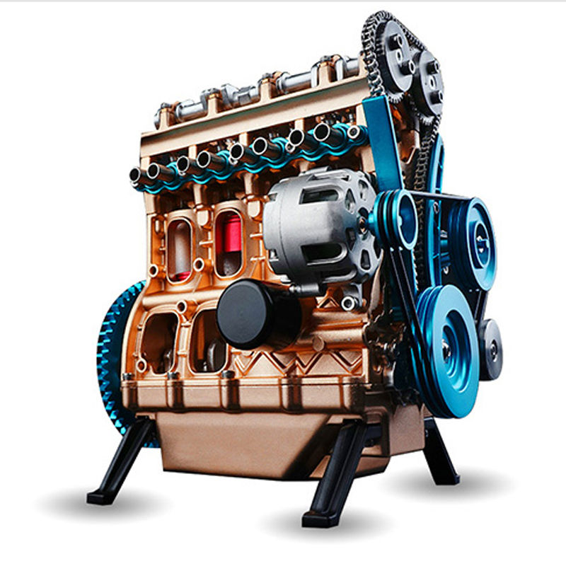
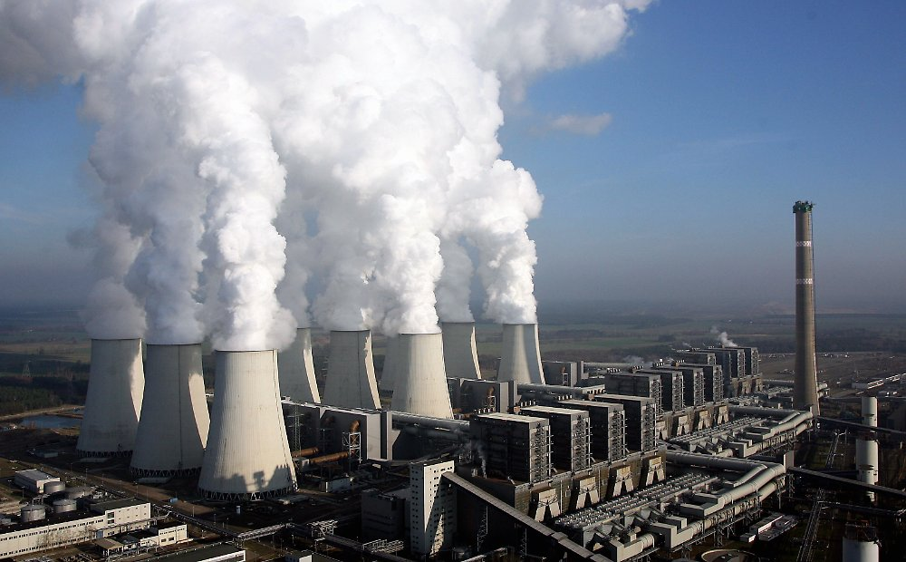
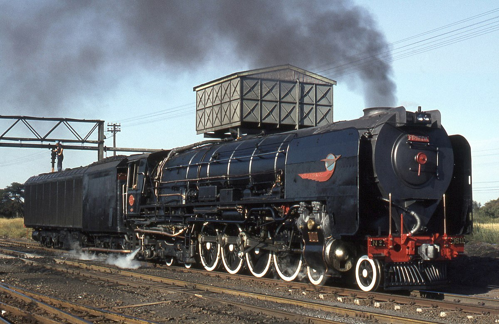

Situação
de
aprendizagem
Situação
de
aprendizagem
Termodinâmica é um ramo da física no qual estuda causas e efeitos de certas mudanças naturais, sendo elas temperatura, pressão e volume. A termodinâmica tem como principal objetivo compreender a troca de calor entre corpos e a relação dele com a realização de trabalho.
Históricamente a termodinâmica foi essencial e indispensavel para o inicio da revolução industrial, dando a possibilidade de criação de diversas maquinas, tais quais iremos falar logo a baixo.
Os motores a gasolina começaram a aparecer no século XVIII, no qual os conceitos da termodinâmica começaram a ser aplicadas para gerar tração e força. A ideia desse tipo de motor é obter energia mecânica pela explosão do combustível através de uma faixa, provocando portanto a expansão do gás e o movimento do pistão.
As usinas são instalações industriais que geram energia elétrica a partir da energia do calor. O principal material usado nas usinas é a agua, que, ao ser queimada em altas temperaturas, gera vapor, criando portanto vapor, no qual queima combustiveis fosseis, movimentando consequentemente turbinas que convertem o vapor em trabalho útil.
Uma das invenções mais importantes para o avanço da revolução industrial foi o trem, que permitiu o transporte não somente de pessoas, mas também de imensas quantias de cargas em um espaço tempo absurdo! Os primeiros trem a vapor começaram a aparecer por volta do inicio do século XVIII, que utilizava, de maneira muito simples, a seguinte forma: A madeira ou o carvão é queimada em um grande forno ou caldeira que possue água, a queima ou esquentamento da água gera vapor com muita pressão, passando rapidamente por um duto no qual chega a um cilindro, entrando por fim na válvula de admissão; Dentro da válvula e do cilindor existe pistões que, por conta da pressão, são empurrados e giram as "rodas" do trem.
Fizemos uma atividade prática no qual aplicava os conceitos da termodinâmica e de algumas maquinas apresentadas previamente. Tentamos recriar um barco a vapor utilizando materiais reciclaveis! Fiquem com o video do projeto: